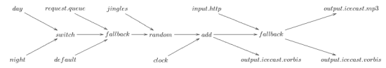

A complete case analysis
We will develop here a more complex example, according to the following specifications:
- play different playlists during the day;
- play user requests – done via the telnet server;
- insert about 1 jingle every 5 songs;
- add one special jingle at the beginning of every hour, mixed on top of the normal stream;
- relay live shows as soon as one is available;
- and set up several outputs.
Once you've managed to describe what you want in such a modular way, you're half the way. More precisely, you should think of a diagram such as the following, through which the audio streams flow, following the arrows. The nodes can modify the stream using some basic operators: switching and mixing in our case. The final nodes, the ends of the paths, are outputs: they are in charge of pulling the data out of the graph and send it to the world. In our case, we only have outputs to icecast, using two different formats.
Now here is how to write that in Liquidsoap.
#!/usr/bin/liquidsoap
# Lines starting with # are comments, they are ignored.
# Put the log file in some directory where
# you have permission to write.
set("log.file.path","/tmp/<script>.log")
# Print log messages to the console,
# can also be done by passing the -v option to liquidsoap.
set("log.stdout", true)
# Use the telnet server for requests
set("server.telnet", true)
# A bunch of files and playlists,
# supposedly all located in the same base dir.
default = single("~/radio/default.ogg")
day = playlist("~/radio/day.pls")
night = playlist("~/radio/night.pls")
jingles = playlist("~/radio/jingles.pls")
clock = single("~/radio/clock.ogg")
start = single("~/radio/live_start.ogg")
stop = single("~/radio/live_stop.ogg")
# Play user requests if there are any,
# otherwise one of our playlists,
# and the default file if anything goes wrong.
radio = fallback([ request.queue(id="request"),
switch([({ 6h-22h }, day),
({ 22h-6h }, night)]),
default])
# Add the normal jingles
radio = random(weights=[1,5],[ jingles, radio ])
# And the clock jingle
radio = add([radio, switch([({0m0s},clock)])])
# Add the ability to relay live shows
full =
fallback(track_sensitive=false,
[input.http("http://localhost:8000/live.ogg"),
radio])
# Output the full stream in OGG and MP3
output.icecast(%mp3,
host="localhost",port=8000,password="hackme",
mount="radio",full)
output.icecast(%vorbis,
host="localhost",port=8000,password="hackme",
mount="radio.ogg",full)
# Output the stream without live in OGG
output.icecast(%vorbis,
host="localhost",port=8000,password="hackme",
mount="radio_nolive.ogg",radio)

To try this example you need to edit the file names. In order to witness the switch from one playlist to another you can change the time intervals. If it is 16:42, try the intervals 0h-16h45 and 16h45-24h instead of 6h-22h and 22h-6h. To witness the clock jingle, you can ask for it to be played every minute by using the 0s interval instead of 0m0s.
To try the transition to a live show you need to start a new stream on the live.ogg mount of your server. You can send a playlist to it using examples from the quickstart. To start a real live show from soundcard input you can use darkice, or simply liquidsoap if you have a working ALSA input, with:
liquidsoap 'output.icecast(%vorbis, mount="live.ogg",host="...",password="...",input.alsa())'